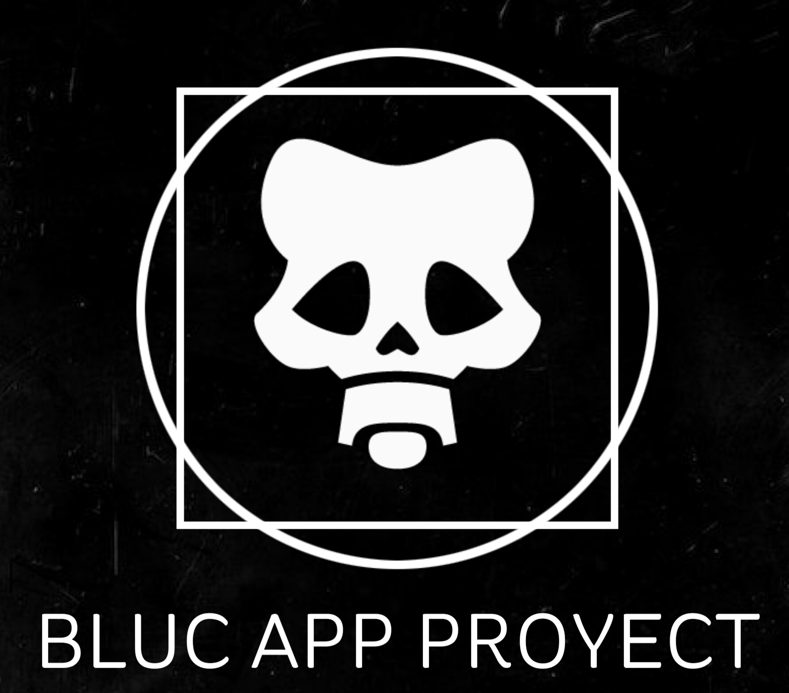
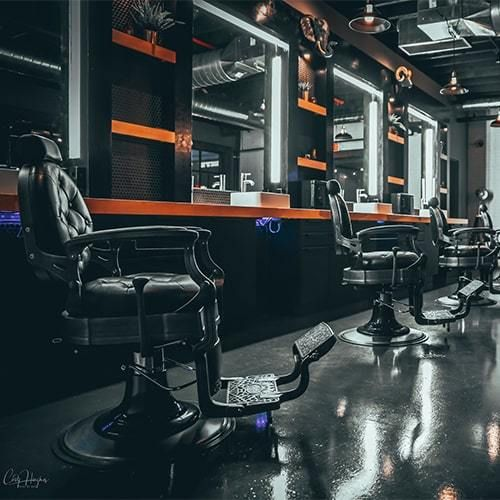

Blu app proyect
ANTECEDENTES DEL PROYECTO
Una gran problemática presente en la ciudad de Cartagena (y así como en otras ciudades alrededor del país) es que los servicios ofrecidos en establecimientos públicos, tales como almacenes de cadena, tiendas de ropa, peluquerías, barberías o salones de belleza, es el retraso de atención y el mal agendamiento de citas por parte de dichos locales, lo cual genera un descontento y muchos inconvenientes para los clientes, los cuales desean obtener un servicio de calidad en función del precio o el valor de adquisición del servicio.
¿QUE ES BLU APP PROYECT?

Blu app proyect es un proyecto que tiene como objetivo diseñar y desarrollar una aplicación web con el uso de los lenguajes HTML, CSS y JS con el fin de gestionar el agendamiento de citas y adquisición de servicios de las barberías de la ciudad de Cartagena. Para ello, los clientes o usuarios de dicha aplicación podrán gozar de los siguientes beneficios:
* Buscar barberías locales.
* Ver la lista de servicios y productos ofrecidos por cada local.
* Ver la lista de precios correspondiente a cada servicio o producto.
* Agendar una cita para ser atendido en cualquiera de nuestras barberías afiliadas, seleccionando la hora, el tipo de servicio y la persona o barbero por el cual será atendido.
OBJETIVOS DEL PROYECTO

La meta de Blu app proyect es crear una aplicación con una interfaz amigable con el usuario y fácil de entender y de usar para que las personas realicen sus pedidos y agendamientos de citas a las barberías desde la comodidad de su casa, evitando las largas filas, imprevistos y demas molestias, estableciendo una relación amistosa con el usuario y siendo intermediario entre los establecimientos y locales que ofrecen sus productos o servicios y sus clientes, generando un entorno de interacción amigable.
RECURSOS
En Blu app Proyect ,es necesario contactar con las barberías locales de la ciudad de Cartagena de indias, para que estás se conviertan en afiliados y podamos brindarles todos los servicios disponibles en nuestra app, a cambio de una remuneración monetaria la cual se verá reflejada en el valor de cada producto o servicio (como una comisión).
ABOUT ME

GABRIEL RODRIGUEZ
INFORMATIC ENGINNER IN TRAINING
Aunar Cartagena University
Sixth semester
Mi nombre es César Gabriel Rodríguez De La Ossa, soy estudiante de sexto semestre de ingeniería informática de la corporación universitaria Autónoma de Nariño, vivo en la ciudad de Cartagena de indias. Soy una persona dedicada y apasionada por lo que hace. Entre mis hobbies y gustos se encuentran la música, la escritura, la poesía, la lectura, el cine, el dibujo, el desarrollo web y también trabajo como fotógrafo principiante en el campo de la fotografía de stock.
Información de contacto:
Phone: +57 3006784184
Mail: gabriel.delaossa2607@gmail.com